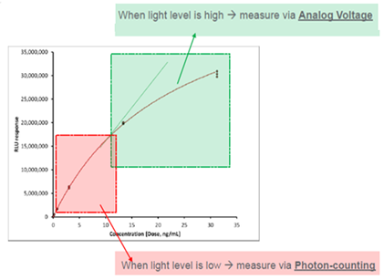
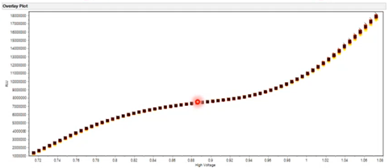

Luminometer Calibrations Overview
This topic includes information about luminometer calibrations.
Relative Light Unit (RLU) Calculations
The luminometer module has a temperature-controlled chassis that accepts one patient sample in a reaction vessel (RV). The luminometer measures the amount of light, in relative light units (RLUs), that a sample emits. The system converts the results (in RLUs) to a dose based on assay-specific calibrations.
The system uses two methods to read the sample: photon counting and analog voltage.
For low light samples, the system converts individual photons to pulses, which are then counted as RLUs. As the amount of light increases, these pulses group together and become difficult to distinguish from one another. Therefore, the system also uses an analog voltage method.

The photon counting and analog voltage methods are both linear at the low calibration point and upper calibration point. The system establishes a relationship using linear regression. The calculation uses both photon and analog values between the upper and lower calibration points where RLUs = ((slope) x analog voltage) + offset.
There is also a transition period (stitching region) between the two types of readings. All readings below the lower stitching point are photon-based, and all readings above the upper stitching point are analog voltage-based. Both counting methods (photon and voltage) are used in the stitching region.
Photomultiplier Tube (PMT) Overview
The luminometer module consists of a photomultiplier tube (PMT), an LED assembly attached to the back side of the module (which is only used during calibration and module performance checks), and an electronics module on the underside of the assembly.
PMT performance varies with temperature. Therefore, the chassis is heated to maintain the PMT at a consistent temperature while reading RVs.
Because the PMT is extremely sensitive to light, the luminometer chassis provides a completely dark state for reading a sample. This ensures the PMT reads only light given off by the sample in the RV. It is important to always protect the PMT from extraneous light during service and troubleshooting. Too much light exposure can permanently damage the PMT.
Calibration Values
| Calibration Name | Variable Name(s) |
|---|---|
| LED Standard Calibration | LEDStandardCal |
| PMT High Voltage (HV) Calibration | PMTDACCal and CorrectionsFactor |
| LED Points Calibration | LEDAtLowerCalibrationPoint and LEDAtUpperCalibrationPoint |
| Linear Response Calibration | LinearSlope and LinearOffset |
The LEDStandardCal value is set by the manufacturer. Use the Machine Control App to calibrate and store values for the remaining variables. See Calibrating the Luminometer for more information.
To view stored calibration values, in the Machine Control App go to , and on the Action tab select GetCalibrationData.
To view previous calibration values, open the LuminometerPMTHVCheck.csv and LuminometerDriftMeasurements.csv files in theD:\ProgramData\Beckman Coulter\Falcon folder.
LED Standard Calibration
This calibration is only performed by the manufacturer. For this calibration, the PMT is removed from the luminometer and replaced with a calibrated light measurement sensor attached to a meter. The voltage to the LED assembly is adjusted until it outputs light within the target range of calibration. The voltage is then stored as the LEDStandardCal value. The PMT is then put back into the Luminometer module.
PMT High Voltage (HV) Calibration
For this calibration, the LED will use the LEDStandardCal voltage value and then record RLU readings while incrementing the PMT high voltage from the minimum to maximum setting. To reduce noise and to make RLU readings more reliable, the system will select a voltage setting where small changes in high voltage will minimally impact RLU readings. The system will select the voltage setting with the least slope (the plateau region) and store that value as PMTDACCal.

After the system has determined the PMTDACCal value, to standardize the light level at this value, the system will apply a multiplier to convert the reading to 7.5 million RLUs. The system will store the multiplier as the CorrectionsFactor value.
LED Points Calibration
For this calibration, the system will determine two new LED voltages for use in linear calibration. The system will adjust LED voltage to target a lower point and upper point of RLU and store the values as LEDAtLowerCalibrationPoint and LEDAtUpperCalibrationPoint.
Linear Response Calibration
For this calibration, the system will set the LED voltage to the LEDAtLowerCalibrationPoint value. The system will then increment the voltage setting ten or more times and measure the respective RLUs until it reaches LEDAtUpperCalibrationPoint value. To establish a relationship between the photon counting and analog voltage methods for reading a sample, the system uses the readings from this calibration to calculate a slope and offset. The system stores the values as LinearSlope and LinearOffset, which are used to calculate RLUs for analog readings. See Relative Light Unit (RLU) Calculations for more information.